클로드로 디자인할 때 설치할 3가지
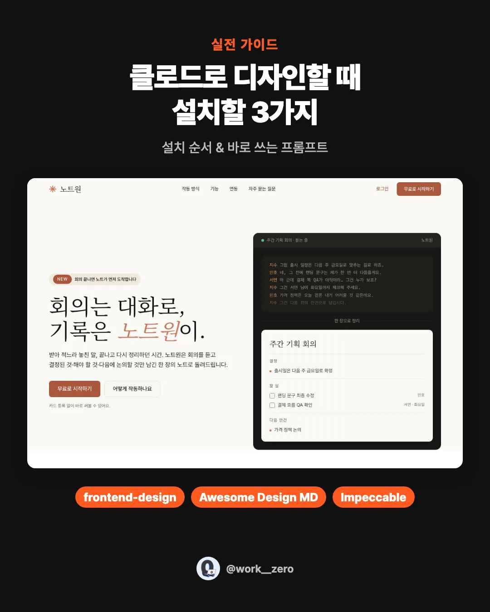
이 가이드는 이런 분을 위해 썼어요 코딩을 한 번도 안 해 봤어도 괜찮아요. 명령어를 외울 필요도 없어요. 전부 Claude 앱 안에서 클릭하고, 이 페이지의 문장을 복사해서 붙여넣기만 하면 돼요. 중간에 에러가 나도 정상이에요. 맨 아래 "막히면 이렇게"를 보세요.
30초 요약
- 클로드에게 웹사이트를 그냥 시키면 몇 번을 다시 해도 거의 같은 모양이 나와요. "좋은 디자인"의 기준이 없어서예요.
- 기준을 넣어 주는 무료 도구 3개를 차례로 붙이면 돼요. frontend-design → DESIGN.md → Impeccable
- 설치는 Claude 앱의 Code 탭에서 클릭 몇 번이면 끝나요.
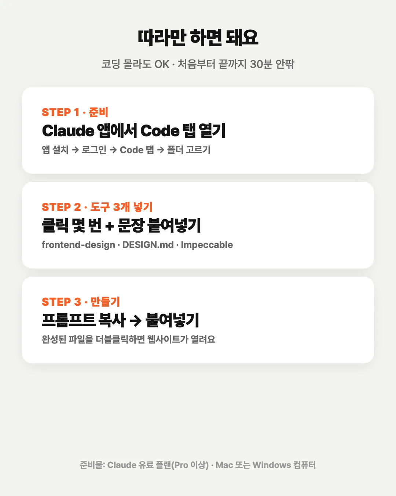
준비물 체크
- Claude 유료 플랜 (Pro 이상). 무료 플랜에서는 Code 탭을 쓸 수 없어요.
- Mac 또는 Windows 컴퓨터
- 30분 정도
1. 왜 그냥 시키면 다 똑같을까요?
같은 부탁을 도구 없이 세 번 해 봤어요. AI 회의록 요약 서비스 '노트원'의 랜딩페이지 만들어줘.
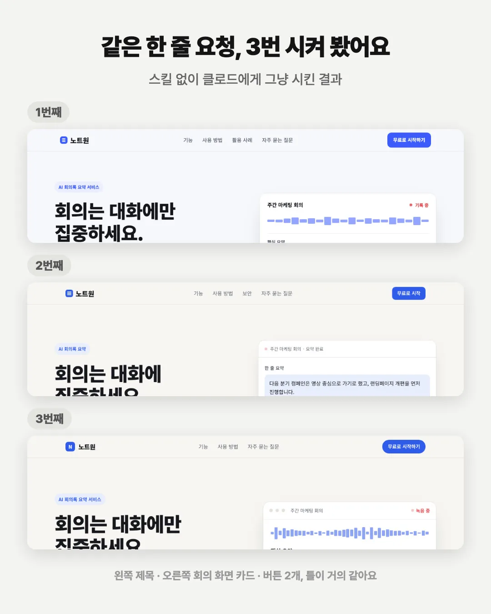
못생긴 건 아닌데, 세 번 다 모양이 거의 같아요. 왼쪽에 큰 제목, 오른쪽에 카드, 파란 버튼 두 개. 기준을 따로 주지 않으면 클로드는 가장 무난한 평균값을 만들어요. 도구를 하나씩 붙이면 이렇게 달라져요. 같은 부탁에 도구만 바꿔 붙인 실제 결과예요.
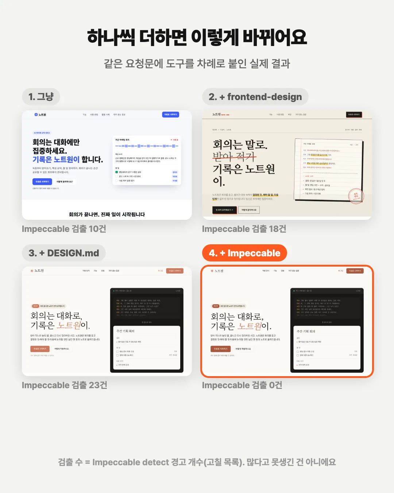
2. 준비: Claude 앱에서 Code 탭 열기
Code 탭은 클로드가 내 컴퓨터 폴더 안에 직접 파일을 만들어 주는 곳이에요. 채팅에서 코드를 복사해 붙여넣을 필요가 없어요. "웹사이트 만들어줘" 하면 폴더에 파일이 생겨요.
① Claude 앱 설치하고 Code 탭 누르기
- https://claude.com/download 에서 내 컴퓨터(Mac / Windows)에 맞는 앱을 받아 설치해요.
- 앱을 열고 평소 쓰는 Claude 계정으로 로그인해요.
- 위쪽 가운데에 있는 Code 탭을 눌러요.
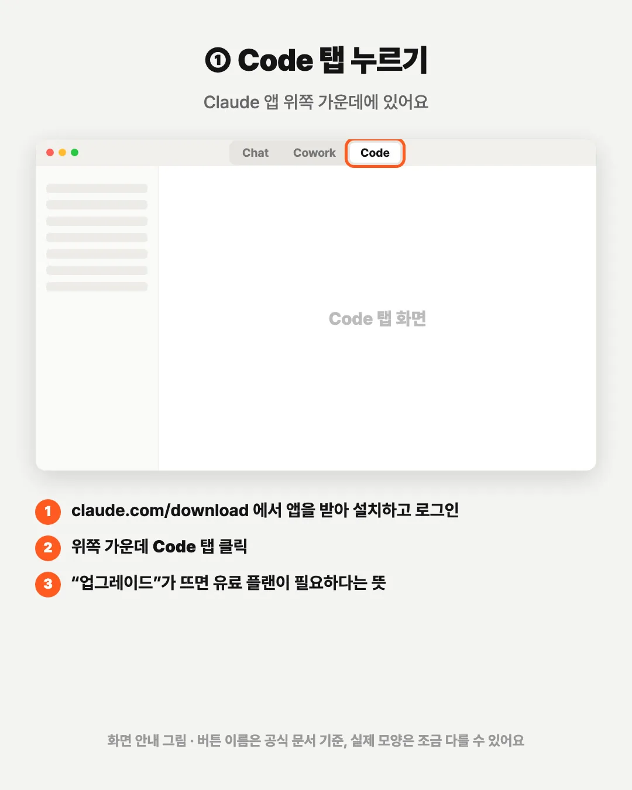
"업그레이드"라는 창이 떠요 Code 탭은 유료 플랜(Pro 이상)에서만 열려요. 플랜을 올린 뒤 앱을 껐다 켜면 돼요.
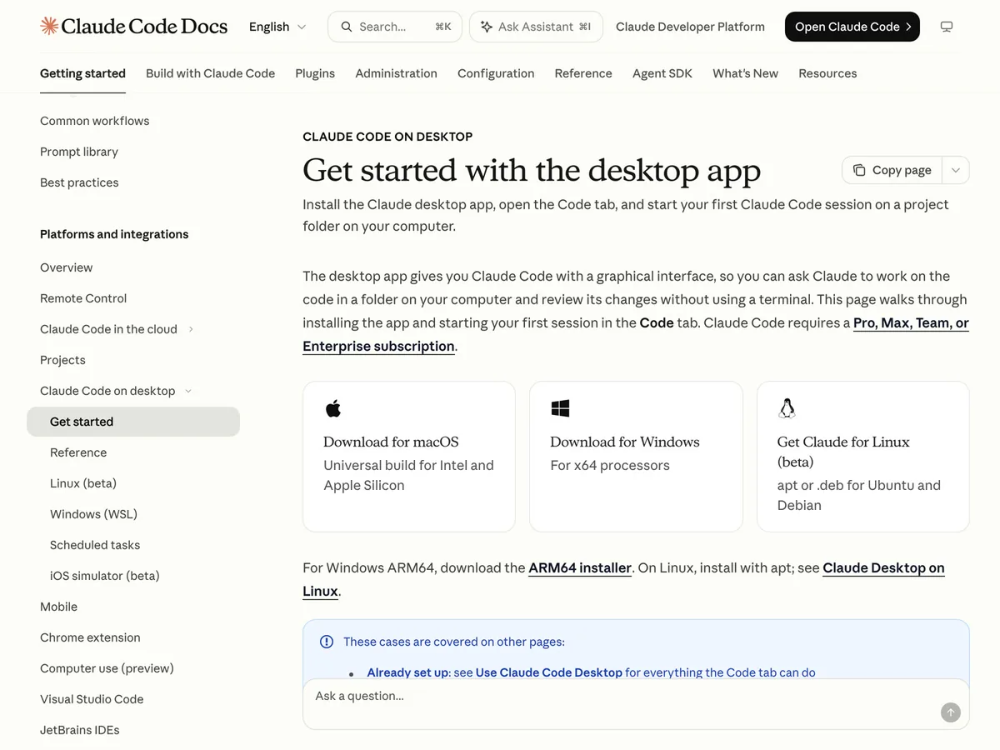
② 작업할 폴더 고르기
- 먼저 바탕화면에 빈 폴더를 하나 만들어요. 이름은 아무거나 괜찮아요. 예:
내-첫-웹사이트 - Code 탭에서 Local을 고르고 Select folder를 눌러 방금 만든 폴더를 골라요.
- "이 폴더를 믿나요?"처럼 물어보면 예(Yes)를 눌러요. 내가 만든 빈 폴더라서 괜찮아요.
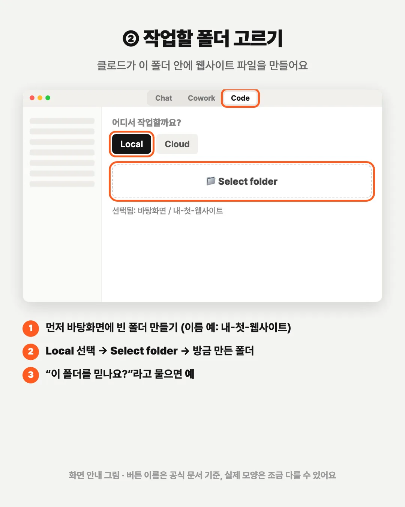
③ 말로 시키기
- 아래 입력창에 하고 싶은 일을 한국어로 쓰거나, 이 가이드의 문장을 복사해서 붙여넣어요.
- Enter를 누르면 클로드가 일을 시작해요.
- "파일을 만들어도 될까요?"라고 물으면 Accept(허용)를 눌러요. 내 폴더에 파일을 만들기 전에 확인하는 거예요.
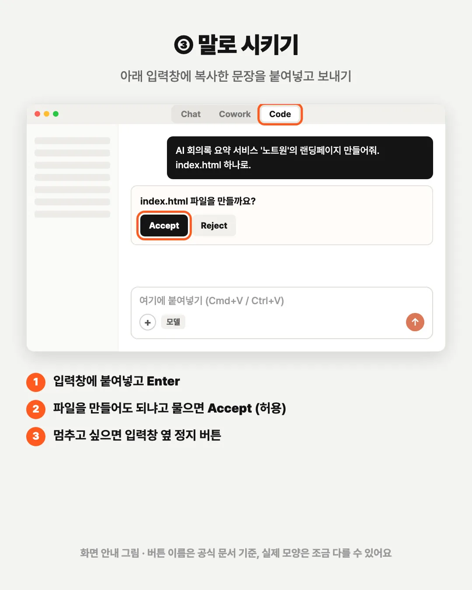
④ 결과 열어 보기
- Finder(맥) 또는 파일 탐색기(윈도우)에서 아까 만든 폴더를 열어요.
- 새로 생긴 index.html을 더블클릭하면 인터넷 브라우저에서 웹사이트가 열려요.
- 고치고 싶은 곳은 다시 입력창에 말로 하면 돼요. 예: "버튼 색을 더 진하게 해줘"
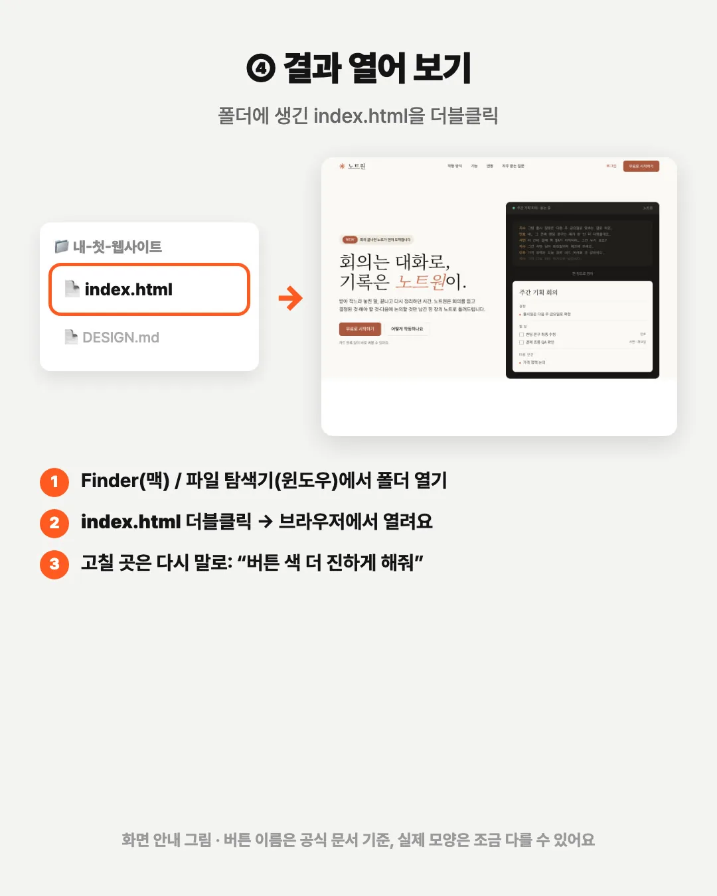
여기까지 왔으면 반은 끝났어요 이제 도구 3개만 붙이면 돼요. 하나당 5분이면 충분해요.
3. ① frontend-design: 디자인 방향부터 잡아 주는 도구
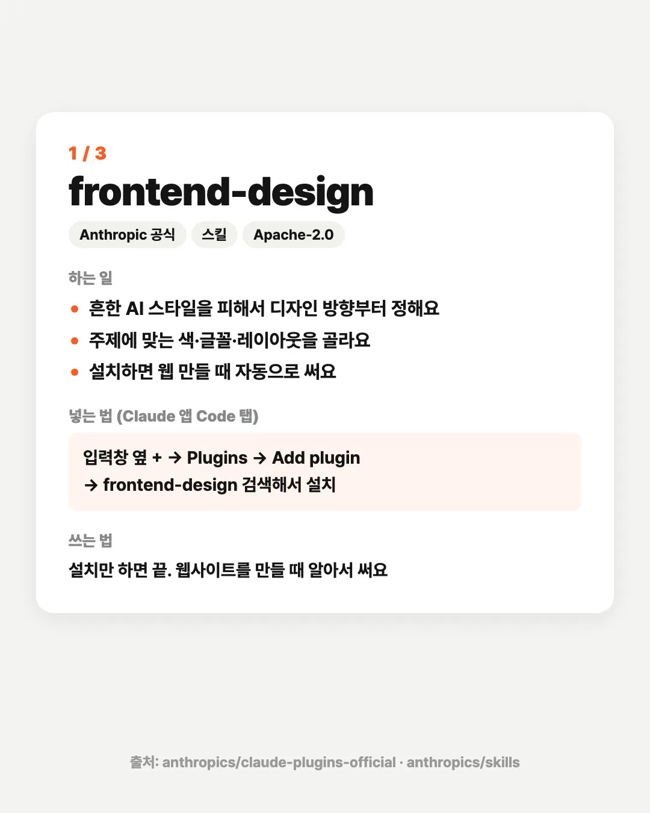
Anthropic(클로드를 만든 회사)이 직접 만든 공식 도구예요. 웹사이트를 만들 때 "흔한 AI 스타일"을 피하고, 주제에 맞는 색·글꼴·배치를 먼저 정하게 해 줘요. 한 번 설치하면 웹사이트를 만들 때마다 알아서 써요.
설치 (클릭 3번)
- 입력창 옆 + 버튼을 눌러요.
- Plugins → Add plugin을 눌러요.
- 검색창에
frontend-design을 입력하고, 나온 항목을 눌러 설치해요. 설치 범위를 물으면 나(user)를 고르세요. 그러면 어느 폴더에서든 써요.
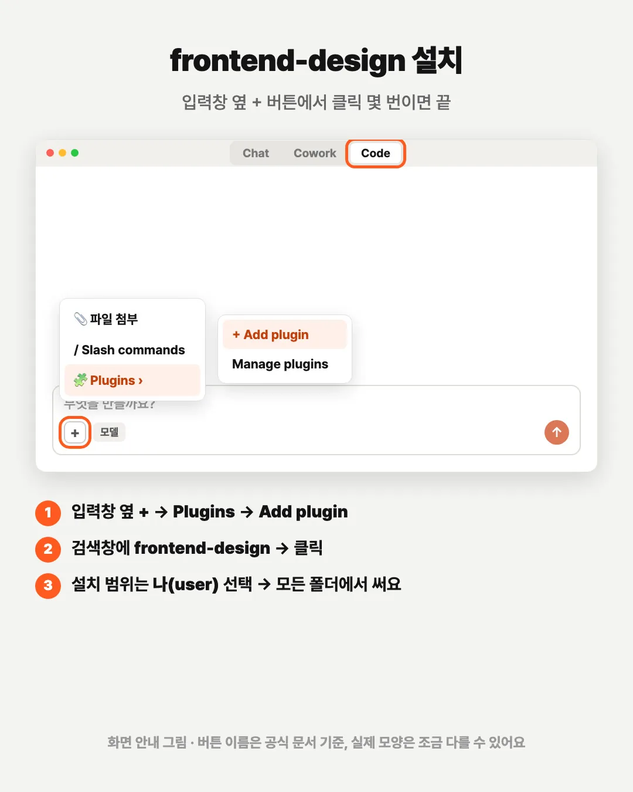
목록에 안 보여요 검색어를 frontend까지만 쳐 보세요. 만든 곳(By)이 Anthropic인지 확인하고 설치하면 돼요.
전과 후
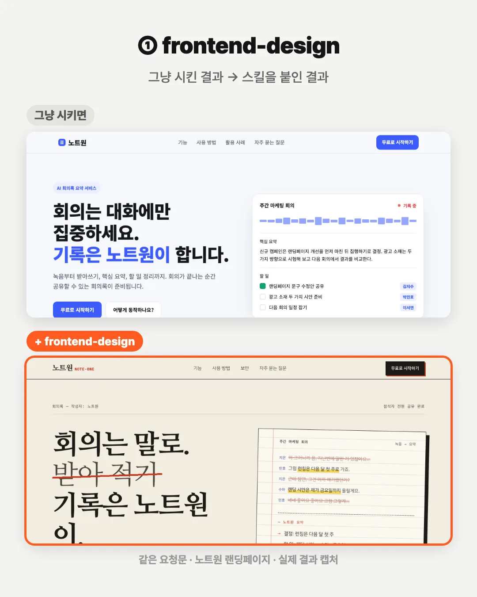
모양 자체가 달라졌어요. 손글씨 취소선, 노트 느낌처럼 "회의록"이라는 주제에서 나온 장식이 들어가요.
바로 쓰는 프롬프트 (복사해서 붙여넣기)
AI 회의록 요약 서비스 '노트원'의 랜딩페이지 만들어줘. index.html 파일 하나로.
사용자 수·평점·가격 같은 숫자는 지어내지 마.
만들기 전에 어떤 디자인 방향으로 갈지 한 줄로 먼저 알려줘.[내 서비스 이름]의 소개 페이지 첫 화면을 만들어줘. 보는 사람은 [누구]야.
흔한 AI 템플릿처럼 보이지 않게, 이 서비스 주제에서만 나올 수 있는 디자인 포인트를 하나 넣어줘.지금 만든 페이지를 세 가지 다른 분위기로 제안해줘.
각각 색·글꼴·배치를 한 줄씩 설명해 주고, 내가 고른 걸로 다시 만들어줘.4. ② DESIGN.md: 유명 브랜드의 디자인 규칙 빌려 오기
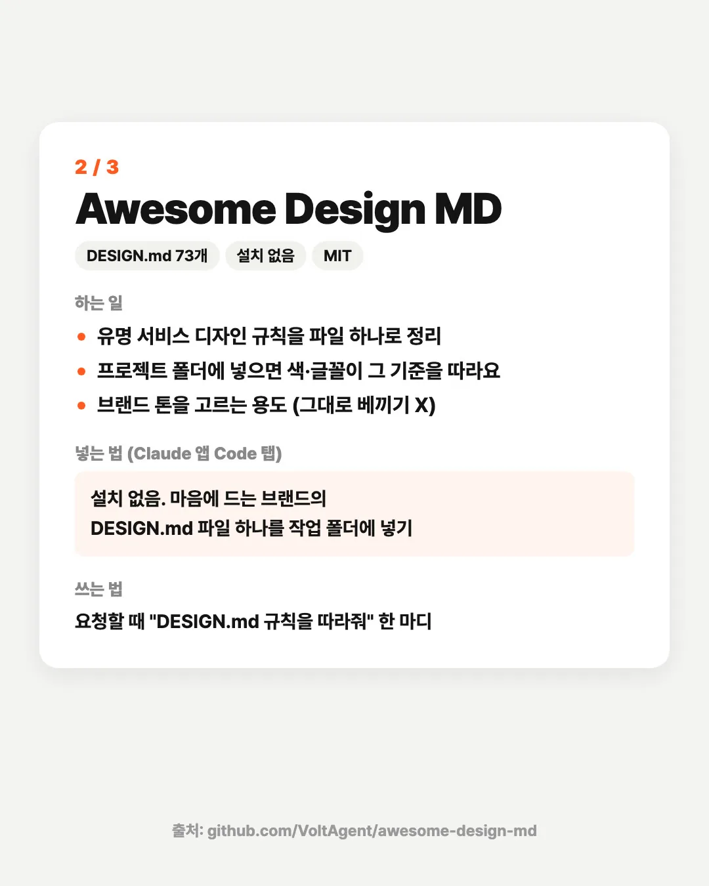
Stripe, Notion, Claude 같은 유명 서비스의 디자인 규칙(색, 글꼴, 여백, 버튼 모양)을 글로 정리한 파일 모음이에요. 마음에 드는 브랜드의 파일 하나를 작업 폴더에 넣으면, 클로드가 그 규칙을 따라 만들어요. 설치할 건 없어요.
넣는 법 A: 클로드에게 시키기 (추천)
아래 문장을 그대로 복사해서 보내세요. 이 가이드에서 쓴 claude 스타일 파일이에요.
아래 주소의 파일을 이 폴더에 DESIGN.md라는 이름으로 저장해줘.
https://raw.githubusercontent.com/VoltAgent/awesome-design-md/main/design-md/claude/DESIGN.md인터넷에서 파일을 받아도 되냐고 물으면 Allow(허용)를 누르면 돼요.
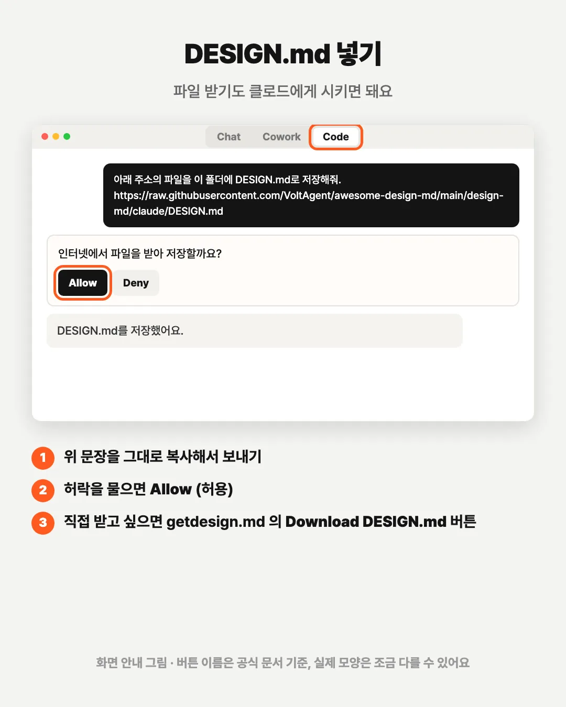
넣는 법 B: 직접 내려받기
- https://getdesign.md 에서 마음에 드는 브랜드를 골라요.
- 브랜드 페이지의 Download DESIGN.md 버튼을 눌러요.
- 내려받은 파일을 작업 폴더(예: 바탕화면의
내-첫-웹사이트)로 옮겨요.
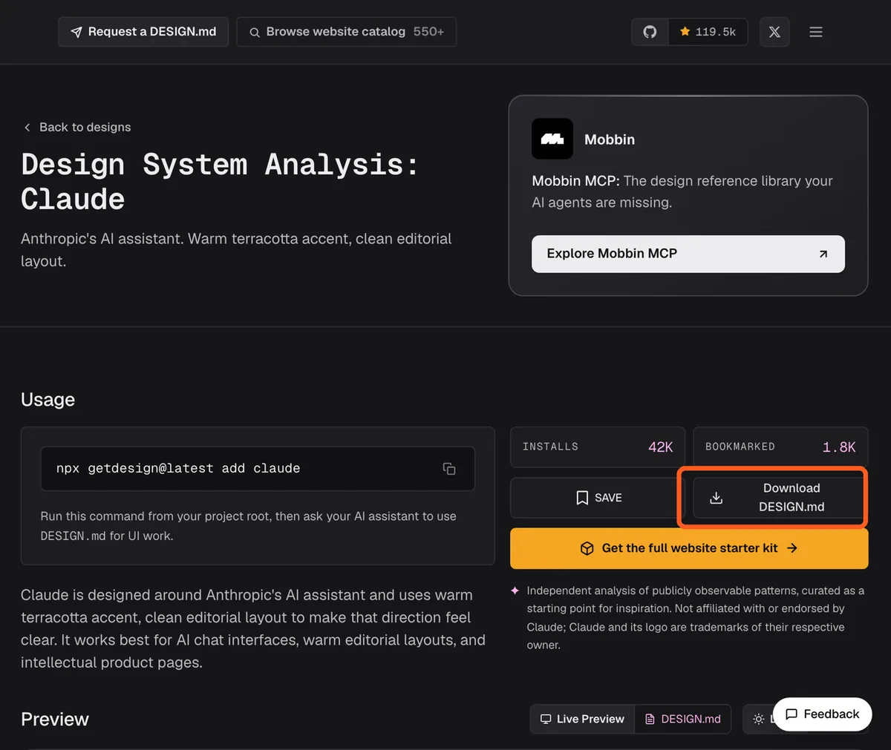
전과 후
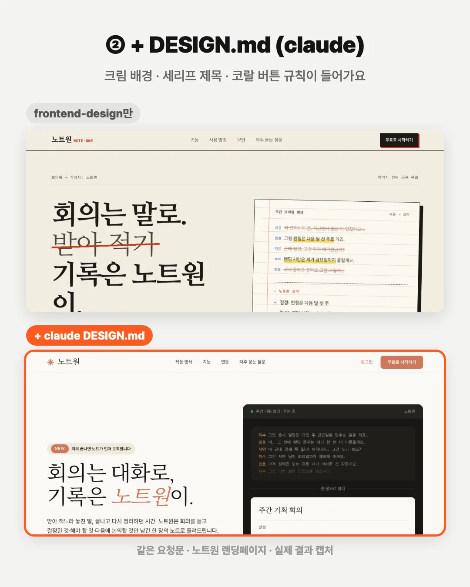
claude 스타일 파일을 넣었더니 크림색 배경, 세리프 제목, 주황빛 버튼이 그대로 들어갔어요.
어떤 브랜드를 고를까요?
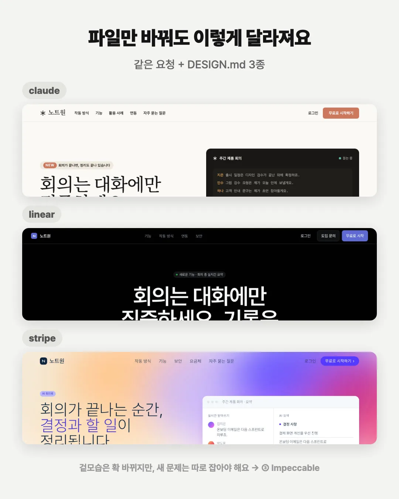
- 파일만 바꿔도 분위기가 확 바뀌어요.
- 내 서비스 분위기와 맞는 걸 고르세요. 차분한 서비스라면 claude처럼 따뜻한 톤, 세련된 IT 서비스라면 linear처럼 어두운 톤이 어울려요.
- 브랜드를 그대로 베끼는 용도는 아니에요. 분위기만 빌려 오는 참고용으로 쓰세요.
- 파일을 바꾸면 새로 어색한 부분이 생길 수 있어요. 그건 ③ Impeccable로 정리해요.
바로 쓰는 프롬프트
이 폴더의 DESIGN.md 규칙(색·글꼴·여백)을 따라서
'노트원' 랜딩페이지를 index.html 파일 하나로 만들어줘. 숫자는 지어내지 마.DESIGN.md를 읽고 이 브랜드 디자인의 핵심을 5줄로 쉽게 요약해줘.
그다음 지금 index.html에서 이 규칙과 다른 부분을 찾아서 고쳐줘.내 서비스는 [한 줄 설명]이야. getdesign.md에 있는 브랜드 중에서
분위기가 어울리는 후보 3개를 이유와 함께 추천해줘.5. ③ Impeccable: 어색한 부분을 찾아서 다듬는 도구
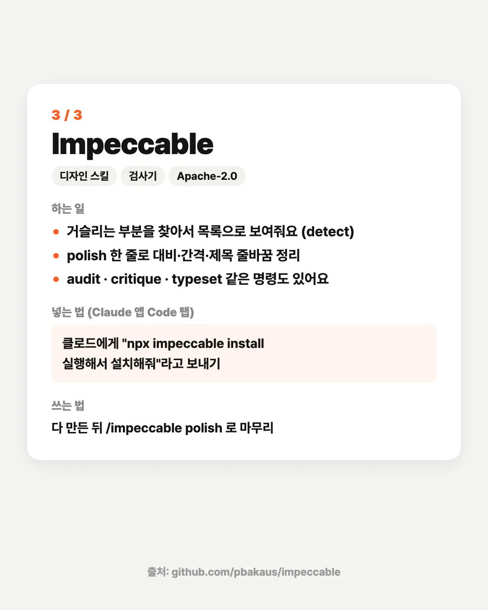
다 만든 페이지에서 어색한 부분(글자가 잘 안 보이는 색, 흔한 아이콘 카드, 제목 줄바꿈이 이상한 곳 등)을 찾아서 정리해 주는 도구예요. 마지막 마무리 담당이에요.
설치 (클로드에게 시키기)
아래 문장을 복사해서 보내세요.
npx impeccable install 을 실행해서 Impeccable을 이 폴더에 설치해줘.
안 되면 이유를 쉬운 말로 알려주고, 내가 해야 할 일을 순서대로 알려줘.- 명령을 실행해도 되냐고 물으면 Allow(허용)를 눌러요.
- 설치가 끝나면 왼쪽에서 새 세션을 열어요. 새로 연 대화부터 Impeccable이 보여요.
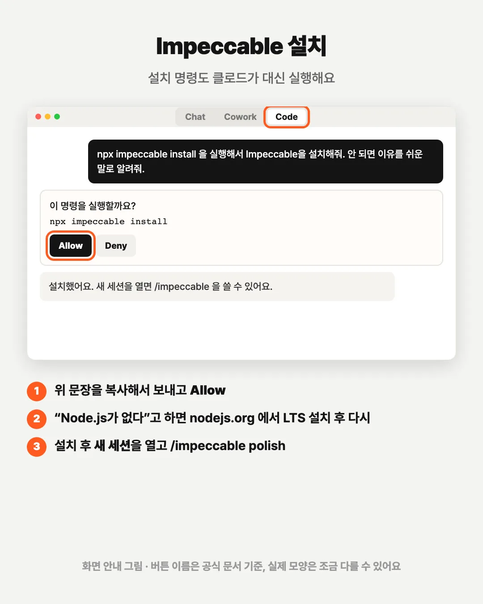
"Node.js가 없어요"라고 하면 Impeccable을 설치하려면 Node.js라는 프로그램이 먼저 있어야 해요.
- https://nodejs.org 에 들어가서 LTS라고 적힌 버튼으로 내려받아요.
- 내려받은 파일을 더블클릭하고 계속 "다음"을 누르면 설치돼요.
- Claude 앱을 껐다 켠 뒤, 위 문장을 다시 보내세요.
설치하면 생기는 일 (원래 그런 거예요) Impeccable은 클로드가 파일을 고칠 때마다 디자인을 자동으로 검사하는 기능을 같이 켜요. 그래서 작업 중에 "Checking UI changes" 같은 문구가 보일 수 있어요. 끄고 싶으면 클로드에게 "Impeccable 자동 검사 꺼줘"라고 하면 돼요.
쓰는 법
페이지를 다 만든 뒤 새 세션 입력창에 이렇게 보내세요.
/impeccable polish index.html입력창에 /를 치면 쓸 수 있는 명령 목록이 떠요. 거기서 impeccable을 골라도 돼요.
전과 후
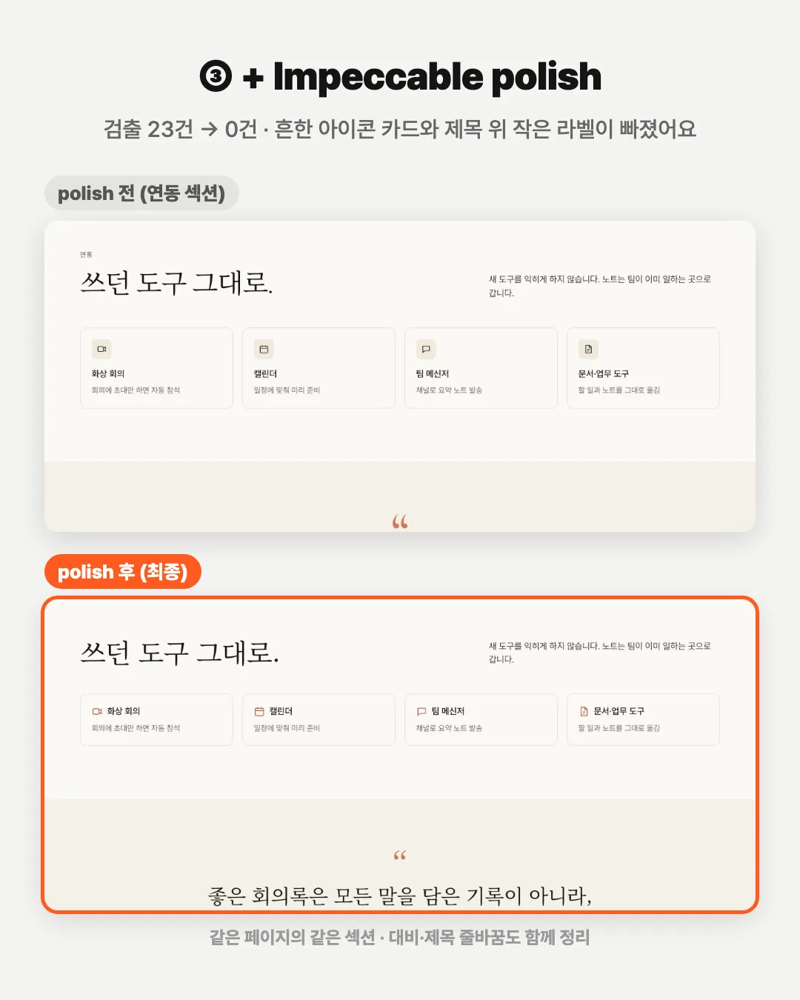
마무리 전에는 검사에서 고칠 곳이 23개 나왔고, 마무리 후에는 0개가 됐어요. 흔한 아이콘 카드가 깔끔한 한 줄로 바뀌고, 제목 위의 작은 글씨가 빠지고, 버튼 글씨가 더 잘 보이게 바뀌었어요.
"0개"가 곧 "완벽한 디자인"은 아니에요 이 검사는 정해진 규칙만 봐요. 서비스 분위기와 맞는지는 못 봐요. 마지막 판단은 내 눈으로 직접 보고 하세요.
바로 쓰는 프롬프트
/impeccable polish index.html
제목이 한 글자만 다음 줄로 넘어가지 않게 해주고 (컴퓨터, 휴대폰 화면 둘 다),
디자인 분위기와 문구는 그대로 둬. 숫자나 이모지는 새로 넣지 마./impeccable critique index.html
처음 보는 사람이 5초 안에 무슨 서비스인지 알 수 있는지 평가해 주고,
가장 먼저 고칠 세 가지만 골라서 고쳐줘.지금 페이지에서 어색한 부분을 찾아서 쉬운 말로 설명해줘.
고칠 것과 일부러 둔 것을 나눠서, 고칠 것만 고쳐줘.6. 3개를 한 번에 쓰는 순서
- frontend-design 설치 (처음 한 번만)
- 새 작업 폴더에 DESIGN.md 넣기
- 아래 프롬프트를 복사해서 보내기
- 다 되면 새 세션에서 /impeccable polish index.html
- index.html을 더블클릭해서 보고, 마음에 안 드는 곳은 말로 고치기
한 번에 시키는 프롬프트
이 폴더의 DESIGN.md 규칙(색·글꼴·여백)을 따르고, frontend-design 스킬로 디자인 방향을 잡아서
[내 서비스 이름]의 랜딩페이지를 index.html 파일 하나로 만들어줘.
보는 사람은 [누구]이고, 가장 강조할 내용은 [한 줄]이야.
사용자 수·평점·가격 같은 숫자는 지어내지 마.7. 막히면 이렇게
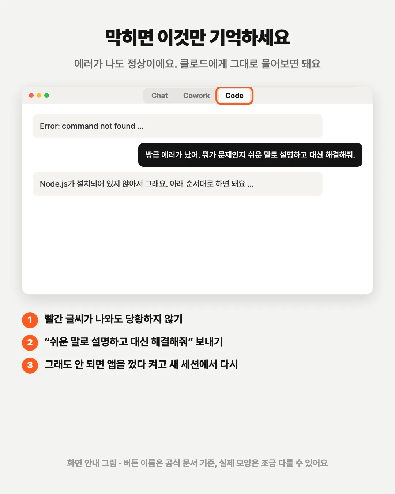
제일 중요한 한 가지. 빨간 글씨나 에러가 나오면 당황하지 말고 클로드에게 그대로 말하세요.
방금 에러가 났어. 뭐가 문제인지 쉬운 말로 설명하고, 대신 해결해줘.Code 탭을 누르면 "업그레이드"가 나와요. Code 탭은 유료 플랜(Pro 이상)에서만 열려요. 폴더를 고르는 창에서 뭘 눌러야 할지 모르겠어요. 바탕화면에 만든 빈 폴더를 한 번 누르고 "열기" 또는 "선택"을 누르면 돼요. 자꾸 "허용할까요?"라고 물어봐요. 정상이에요. 내 컴퓨터에 파일을 만들거나 명령을 실행하기 전에 확인하는 거예요. 이 가이드대로 하는 중이라면 Accept / Allow를 누르면 돼요. + 버튼에 Plugins가 없어요. Code 탭에서 Local로 연 세션인지 확인하세요. Cloud 세션에서는 플러그인 메뉴가 안 보여요. 앱이 오래된 버전이면 claude.com/download 에서 새로 받아 설치하세요. /impeccable이 목록에 안 떠요. 설치한 다음 새 세션을 열었는지 확인하세요. 그래도 안 되면 앱을 껐다 켜 보세요. 도구를 붙였는데도 결과가 비슷해요. 부탁할 때 서비스 주제와 보는 사람을 한 줄 더 써 주세요. "흔한 AI 템플릿처럼 보이지 않게"라고 직접 말하는 것도 효과가 있어요. 없는 숫자를 지어내요. ("구독자 12,400명", "평점 4.9" 같은) 실제로 실습 중에도 나왔어요. 부탁할 때 "숫자는 지어내지 마"를 꼭 넣으세요. 돈이 더 드나요? 세 도구는 무료예요. Claude 유료 플랜 요금만 있으면 돼요.
공식 링크
- Claude 앱 내려받기: https://claude.com/download
- Code 탭 시작 안내 (영어): https://code.claude.com/docs/en/desktop-quickstart
- frontend-design: https://github.com/anthropics/claude-plugins-official/tree/main/plugins/frontend-design
- DESIGN.md 모음: https://getdesign.md · https://github.com/VoltAgent/awesome-design-md
- Impeccable: https://github.com/pbakaus/impeccable
- Node.js: https://nodejs.org
기준 날짜: 2026-10-04 (공식 문서 확인 + 직접 설치·실행) 만든 사람: @work__zero